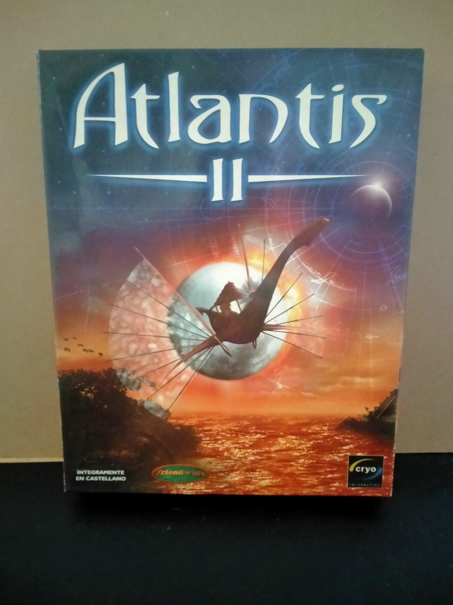

Ficha #000000
Atlantis II
Atlantis II, también conocido como Beyond Atlantis, es una aventura gráfica en primera persona desarrollada por Cryo Interactive y lanzada en 1999. Secuela del exitoso Atlantis: The Lost Tales, combina mitología, fantasía y viajes místicos a través de diferentes civilizaciones como Irlanda celta, China ancestral o Egipto. Destaca por sus gráficos pre-renderizados, banda sonora atmosférica y rompecabezas desafiantes. Su edición Big Box fue distribuida en varios países europeos, incluida España, con textos y voces localizadas al castellano.
- Formato
- Big Box
- Plataforma
- Win95 Win98
- Género
- Aventura gráfica Point and click Fantasía
- Serie
- Todos Big Box
- Desarrollador
- Cryo Interactive
- Distribuidor
- Cryo Interactive
- EAN
- —
Contenido de la edición
- Pendiente de documentación.
Preservación
- Protección
- Sin protección
- Formato recomendado
- ISO
- Jugable en virtualización
- Sí
ImgBurn o Alcohol 120% - Perfil Normal CD